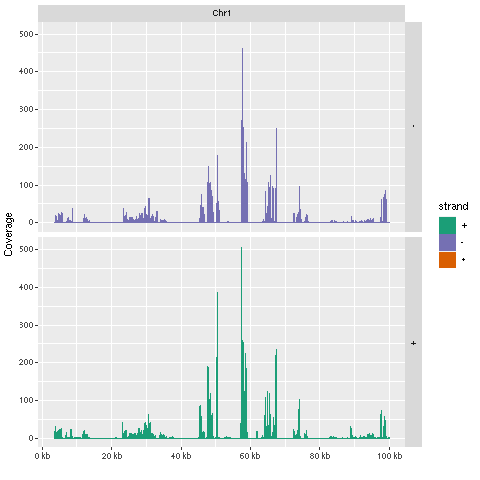

ChIP-Seq Workflow Template
Author: Daniela Cassol (danielac@ucr.edu) and Thomas Girke (thomas.girke@ucr.edu)
Last update: 27 April, 2022
Source:vignettes/systemPipeChIPseq.Rmd
systemPipeChIPseq.RmdIntroduction
Users want to provide here background information about the design of their ChIP-Seq project.
Samples and environment settings
Environment settings and input data
systemPipeRdata package is a helper package to generate a fully populated systemPipeR workflow environment in the current working directory with a single command. All the instruction for generating the workflow are provide in the systemPipeRdata vignette here.
systemPipeRdata::genWorkenvir(workflow = "chipseq", mydirname = "chipseq")
setwd("chipseq")After building and loading the workflow environment generated by genWorkenvir from systemPipeRdata all data inputs are stored in a data/ directory and all analysis results will be written to a separate results/ directory, while the systemPipeChIPseq.Rmd script and the targets file are expected to be located in the parent directory. The R session is expected to run from this parent directory. Additional parameter files are stored under param/.
The chosen data set used by this report SRP010938 contains 18 paired-end (PE) read sets from Arabidposis thaliana (Howard et al. 2013). To minimize processing time during testing, each FASTQ file has been subsetted to 90,000-100,000 randomly sampled PE reads that map to the first 100,000 nucleotides of each chromosome of the A. thaliana genome. The corresponding reference genome sequence (FASTA) and its GFF annotation files have been truncated accordingly. This way the entire test sample data set is less than 200MB in storage space. A PE read set has been chosen for this test data set for flexibility, because it can be used for testing both types of analysis routines requiring either SE (single end) reads or PE reads.
To work with real data, users want to organize their own data similarly and substitute all test data for their own data. To rerun an established workflow on new data, the initial targets file along with the corresponding FASTQ files are usually the only inputs the user needs to provide.
For more details, please consult the documentation here. More information about the targets files from systemPipeR can be found here.
Experiment definition provided by targets file
The targets file defines all FASTQ files and sample comparisons of the analysis workflow.
targetspath <- system.file("extdata", "targetsPE_chip.txt", package = "systemPipeR")
targets <- read.delim(targetspath, comment.char = "#")
targets[1:4, -c(5, 6)]## FileName1 FileName2
## 1 ./data/SRR446027_1.fastq.gz ./data/SRR446027_2.fastq.gz
## 2 ./data/SRR446028_1.fastq.gz ./data/SRR446028_2.fastq.gz
## 3 ./data/SRR446029_1.fastq.gz ./data/SRR446029_2.fastq.gz
## 4 ./data/SRR446030_1.fastq.gz ./data/SRR446030_2.fastq.gz
## SampleName Factor Date SampleReference
## 1 M1A M1 23-Mar-2012
## 2 M1B M1 23-Mar-2012
## 3 A1A A1 23-Mar-2012 M1A
## 4 A1B A1 23-Mar-2012 M1BTo work with custom data, users need to generate a targets file containing the paths to their own FASTQ files.
Workflow environment
systemPipeR workflows can be designed and built from start to finish with a single command, importing from an R Markdown file or stepwise in interactive mode from the R console.
This tutorial will demonstrate how to build the workflow in an interactive mode, appending each step. The workflow is constructed by connecting each step via appendStep method. Each SYSargsList instance contains instructions needed for processing a set of input files with a specific command-line or R software and the paths to the corresponding outfiles generated by a particular tool/step.
To create a Workflow within systemPipeR, we can start by defining an empty container and checking the directory structure:
library(systemPipeR)
sal <- SPRproject()
salRequired packages and resources
The systemPipeR package needs to be loaded (H Backman and Girke 2016).
appendStep(sal) <- LineWise(code = {
library(systemPipeR)
}, step_name = "load_SPR")Read preprocessing
FASTQ quality report
The following seeFastq and seeFastqPlot functions generate and plot a series of useful quality statistics for a set of FASTQ files, including per cycle quality box plots, base proportions, base-level quality trends, relative k-mer diversity, length, and occurrence distribution of reads, number of reads above quality cutoffs and mean quality distribution. The results are written to a PDF file named fastqReport.pdf.
This is the pre-trimming fastq report. Another post-trimming fastq report step is not included in the default. It is recommended to run this step first to decide whether the trimming is needed.
Please note that initial targets files are being used here. In this case, it has been added to the first step using the updateColumn function, and later, we used the getColumn function to extract a named vector.
appendStep(sal) <- LineWise(code = {
targets <- read.delim("targetsPE_chip.txt", comment.char = "#")
updateColumn(sal, step = "load_SPR", position = "targetsWF") <- targets
fq_files <- getColumn(sal, "load_SPR", "targetsWF", column = 1)
fqlist <- seeFastq(fastq = fq_files, batchsize = 10000, klength = 8)
pdf("./results/fastqReport.pdf", height = 18, width = 4 *
length(fqlist))
seeFastqPlot(fqlist)
dev.off()
}, step_name = "fastq_report", dependency = "load_SPR")
Preprocessing with preprocessReads function
The function preprocessReads allows to apply predefined or custom read preprocessing functions to all FASTQ files referenced in a SYSargsList container, such as quality filtering or adapter trimming routines. Internally, preprocessReads uses the FastqStreamer function from the ShortRead package to stream through large FASTQ files in a memory-efficient manner. The following example performs adapter trimming with the trimLRPatterns function from the Biostrings package.
Here, we are appending this step to the SYSargsList object created previously. All the parameters are defined on the preprocessReads-pe.yml file.
appendStep(sal) <- SYSargsList(step_name = "preprocessing", targets = "targetsPE_chip.txt",
dir = TRUE, wf_file = "preprocessReads/preprocessReads-pe.cwl",
input_file = "preprocessReads/preprocessReads-pe.yml", dir_path = system.file("extdata/cwl",
package = "systemPipeR"), inputvars = c(FileName1 = "_FASTQ_PATH1_",
FileName2 = "_FASTQ_PATH2_", SampleName = "_SampleName_"),
dependency = c("fastq_report"))After the preprocessing step, the outfiles files can be used to generate the new targets files containing the paths to the trimmed FASTQ files. The new targets information can be used for the next workflow step instance, e.g. running the NGS alignments with the trimmed FASTQ files. The appendStep function is automatically handling this connectivity between steps. Please check the next step for more details.
The following example shows how one can design a custom read ‘preprocessReads’ function using utilities provided by the ShortRead package, and then run it in batch mode with the ‘preprocessReads’ function. Here, it is possible to replace the function used on the preprocessing step and modify the sal object. Because it is a custom function, it is necessary to save the part in the R object, and internally the preprocessReads.doc.R is loading the custom function. If the R object is saved with a different name (here "param/customFCT.RData"), please replace that accordingly in the preprocessReads.doc.R.
Please, note that this step is not added to the workflow, here just for demonstration.
First, we defined the custom function in the workflow:
appendStep(sal) <- LineWise(code = {
filterFct <- function(fq, cutoff = 20, Nexceptions = 0) {
qcount <- rowSums(as(quality(fq), "matrix") <= cutoff,
na.rm = TRUE)
# Retains reads where Phred scores are >= cutoff
# with N exceptions
fq[qcount <= Nexceptions]
}
save(list = ls(), file = "param/customFCT.RData")
}, step_name = "custom_preprocessing_function", dependency = "preprocessing")After, we can edit the input parameter:
Alignments
Read mapping with Bowtie2
The NGS reads of this project will be aligned with Bowtie2 against the reference genome sequence (Langmead and Salzberg 2012). The parameter settings of the Bowtie2 index are defined in the bowtie2-index.cwl and bowtie2-index.yml files.
Building the index:
appendStep(sal) <- SYSargsList(step_name = "bowtie2_index", dir = FALSE,
targets = NULL, wf_file = "bowtie2/bowtie2-index.cwl", input_file = "bowtie2/bowtie2-index.yml",
dir_path = system.file("extdata/cwl", package = "systemPipeR"),
inputvars = NULL, dependency = c("preprocessing"))The parameter settings of the aligner are defined in the workflow_bowtie2-pe.cwl and workflow_bowtie2-pe.yml files. The following shows how to construct the corresponding SYSargsList object.
In ChIP-Seq experiments it is usually more appropriate to eliminate reads mapping to multiple locations. To achieve this, users want to remove the argument setting -k 50 non-deterministic in the configuration files.
appendStep(sal) <- SYSargsList(step_name = "bowtie2_alignment",
dir = TRUE, targets = "targetsPE_chip.txt", wf_file = "workflow-bowtie2/workflow_bowtie2-pe.cwl",
input_file = "workflow-bowtie2/workflow_bowtie2-pe.yml",
dir_path = system.file("extdata/cwl", package = "systemPipeR"),
inputvars = c(FileName1 = "_FASTQ_PATH1_", FileName2 = "_FASTQ_PATH2_",
SampleName = "_SampleName_"), dependency = c("bowtie2_index"))To double-check the command line for each sample, please use the following:
cmdlist(sal, step = "bowtie2_alignment", targets = 1)Read and alignment stats
The following provides an overview of the number of reads in each sample and how many of them aligned to the reference.
appendStep(sal) <- LineWise(code = {
fqpaths <- getColumn(sal, step = "bowtie2_alignment", "targetsWF",
column = "FileName1")
bampaths <- getColumn(sal, step = "bowtie2_alignment", "outfiles",
column = "samtools_sort_bam")
read_statsDF <- alignStats(args = bampaths, fqpaths = fqpaths,
pairEnd = TRUE)
write.table(read_statsDF, "results/alignStats.xls", row.names = FALSE,
quote = FALSE, sep = "\t")
}, step_name = "align_stats", dependency = "bowtie2_alignment")Create symbolic links for viewing BAM files in IGV
The symLink2bam function creates symbolic links to view the BAM alignment files in a genome browser such as IGV without moving these large files to a local system. The corresponding URLs are written to a file with a path specified under urlfile, here IGVurl.txt. Please replace the directory and the user name.
appendStep(sal) <- LineWise(code = {
bampaths <- getColumn(sal, step = "bowtie2_alignment", "outfiles",
column = "samtools_sort_bam")
symLink2bam(sysargs = bampaths, htmldir = c("~/.html/", "somedir/"),
urlbase = "http://cluster.hpcc.ucr.edu/~tgirke/", urlfile = "./results/IGVurl.txt")
}, step_name = "bam_IGV", dependency = "bowtie2_alignment", run_step = "optional")Utilities for coverage data
The following introduces several utilities useful for ChIP-Seq data. They are not part of the actual workflow. These utilities can be explored once the workflow is executed.
Rle object stores coverage information
bampaths <- getColumn(sal, step = "bowtie2_alignment", "outfiles",
column = "samtools_sort_bam")
aligns <- readGAlignments(bampaths[1])
cov <- coverage(aligns)
covResizing aligned reads
trim(resize(as(aligns, "GRanges"), width = 200))Plot coverage for defined region
library(ggbio)
myloc <- c("Chr1", 1, 1e+05)
ga <- readGAlignments(bampaths[1], use.names = TRUE, param = ScanBamParam(which = GRanges(myloc[1],
IRanges(as.numeric(myloc[2]), as.numeric(myloc[3])))))
autoplot(ga, aes(color = strand, fill = strand), facets = strand ~
seqnames, stat = "coverage")
Peak calling with MACS2
Merge BAM files of replicates prior to peak calling
Merging BAM files of technical and/or biological replicates can improve the sensitivity of the peak calling by increasing the depth of read coverage. The mergeBamByFactor function merges BAM files based on grouping information specified by a factor, here the Factor column of the imported targets file. It also returns an updated targets object containing the paths to the merged BAM files as well as to any unmerged files without replicates. The updated targets object can be used to update the SYSargsList object.
This step can be skipped if merging of BAM files is not desired.
appendStep(sal) <- LineWise(code = {
bampaths <- getColumn(sal, step = "bowtie2_alignment", "outfiles",
column = "samtools_sort_bam")
merge_bams <- mergeBamByFactor(args = bampaths, targetsDF = targetsWF(sal)[["bowtie2_alignment"]],
overwrite = TRUE)
updateColumn(sal, step = "merge_bams", position = "targetsWF") <- merge_bams
writeTargets(sal, step = "merge_bams", file = "targets_merge_bams.txt",
overwrite = TRUE)
}, step_name = "merge_bams", dependency = "bowtie2_alignment")Peak calling without input/reference sample
MACS2 can perform peak calling on ChIP-Seq data with and without input samples (Zhang et al. 2008). The following performs peak calling without input on all samples specified in the corresponding targets object. Note, due to the small size of the sample data, MACS2 needs to be run here with the nomodel setting. For real data sets, users want to remove this parameter in the corresponding *.param file(s).
appendStep(sal) <- SYSargsList(step_name = "call_peaks_macs_noref",
targets = "targets_merge_bams.txt", wf_file = "MACS2/macs2-noinput.cwl",
input_file = "MACS2/macs2-noinput.yml", dir_path = system.file("extdata/cwl",
package = "systemPipeR"), inputvars = c(FileName = "_FASTQ_PATH1_",
SampleName = "_SampleName_"), dependency = c("merge_bams"))Peak calling with input/reference sample
To perform peak calling with input samples, they can be most conveniently specified in the SampleReference column of the initial targets file. The writeTargetsRef function uses this information to create a targets file intermediate for running MACS2 with the corresponding input samples.
appendStep(sal) <- LineWise(code = {
writeTargetsRef(infile = "targets_merge_bams.txt", outfile = "targets_bam_ref.txt",
silent = FALSE, overwrite = TRUE)
}, step_name = "writeTargetsRef", dependency = "merge_bams")
appendStep(sal) <- SYSargsList(step_name = "call_peaks_macs_withref",
targets = "targets_bam_ref.txt", wf_file = "MACS2/macs2-input.cwl",
input_file = "MACS2/macs2-input.yml", dir_path = system.file("extdata/cwl",
package = "systemPipeR"), inputvars = c(FileName1 = "_FASTQ_PATH1_",
FileName2 = "_FASTQ_PATH2_", SampleName = "_SampleName_"),
dependency = c("writeTargetsRef"))The peak calling results from MACS2 are written for each sample to separate files in the results/call_peaks_macs_withref directory. They are named after the corresponding files with extensions used by MACS2.
Identify consensus peaks
The following example shows how one can identify consensus peaks among two peak sets sharing either a minimum absolute overlap and/or minimum relative overlap using the subsetByOverlaps or olRanges functions, respectively. Note, the latter is a custom function imported below by sourcing it.
appendStep(sal) <- LineWise(code = {
peaks_files <- getColumn(sal, step = "call_peaks_macs_noref",
"outfiles", column = "peaks_xls")
peak_M1A <- peaks_files["M1A"]
peak_M1A <- as(read.delim(peak_M1A, comment = "#")[, 1:3],
"GRanges")
peak_A1A <- peaks_files["A1A"]
peak_A1A <- as(read.delim(peak_A1A, comment = "#")[, 1:3],
"GRanges")
(myol1 <- subsetByOverlaps(peak_M1A, peak_A1A, minoverlap = 1))
# Returns any overlap
myol2 <- olRanges(query = peak_M1A, subject = peak_A1A, output = "gr")
# Returns any overlap with OL length information
myol2[values(myol2)["OLpercQ"][, 1] >= 50]
# Returns only query peaks with a minimum overlap of
# 50%
}, step_name = "consensus_peaks", dependency = "call_peaks_macs_noref")Annotate peaks with genomic context
Annotation with ChIPseeker package
The following annotates the identified peaks with genomic context information using the ChIPseeker package (Yu, Wang, and He 2015).
appendStep(sal) <- LineWise(code = {
library(ChIPseeker)
library(GenomicFeatures)
peaks_files <- getColumn(sal, step = "call_peaks_macs_noref",
"outfiles", column = "peaks_xls")
txdb <- suppressWarnings(makeTxDbFromGFF(file = "data/tair10.gff",
format = "gff", dataSource = "TAIR", organism = "Arabidopsis thaliana"))
for (i in seq(along = peaks_files)) {
peakAnno <- annotatePeak(peaks_files[i], TxDb = txdb,
verbose = FALSE)
df <- as.data.frame(peakAnno)
outpaths <- paste0("./results/", names(peaks_files),
"_ChIPseeker_annotated.xls")
names(outpaths) <- names(peaks_files)
write.table(df, outpaths[i], quote = FALSE, row.names = FALSE,
sep = "\t")
}
updateColumn(sal, step = "annotation_ChIPseeker", position = "outfiles") <- data.frame(outpaths)
}, step_name = "annotation_ChIPseeker", dependency = "call_peaks_macs_noref")The peak annotation results are written for each peak set to separate files in the results/ directory.
Summary plots provided by the ChIPseeker package. Here applied only to one sample for demonstration purposes.
appendStep(sal) <- LineWise(code = {
peaks_files <- getColumn(sal, step = "call_peaks_macs_noref",
"outfiles", column = "peaks_xls")
peak <- readPeakFile(peaks_files[1])
pdf("results/peakscoverage.pdf")
covplot(peak, weightCol = "X.log10.pvalue.")
dev.off()
pdf("results/peaksHeatmap.pdf")
peakHeatmap(peaks_files[1], TxDb = txdb, upstream = 1000,
downstream = 1000, color = "red")
dev.off()
pdf("results/peaksProfile.pdf")
plotAvgProf2(peaks_files[1], TxDb = txdb, upstream = 1000,
downstream = 1000, xlab = "Genomic Region (5'->3')",
ylab = "Read Count Frequency", conf = 0.05)
dev.off()
}, step_name = "ChIPseeker_plots", dependency = "annotation_ChIPseeker")Annotation with ChIPpeakAnno package
Same as in previous step but using the ChIPpeakAnno package (Zhu et al. 2010) for annotating the peaks.
appendStep(sal) <- LineWise(code = {
library(ChIPpeakAnno)
library(GenomicFeatures)
peaks_files <- getColumn(sal, step = "call_peaks_macs_noref",
"outfiles", column = "peaks_xls")
txdb <- suppressWarnings(makeTxDbFromGFF(file = "data/tair10.gff",
format = "gff", dataSource = "TAIR", organism = "Arabidopsis thaliana"))
ge <- genes(txdb, columns = c("tx_name", "gene_id", "tx_type"))
for (i in seq(along = peaks_files)) {
peaksGR <- as(read.delim(peaks_files[i], comment = "#"),
"GRanges")
annotatedPeak <- annotatePeakInBatch(peaksGR, AnnotationData = genes(txdb))
df <- data.frame(as.data.frame(annotatedPeak), as.data.frame(values(ge[values(annotatedPeak)$feature,
])))
df$tx_name <- as.character(lapply(df$tx_name, function(x) paste(unlist(x),
sep = "", collapse = ", ")))
df$tx_type <- as.character(lapply(df$tx_type, function(x) paste(unlist(x),
sep = "", collapse = ", ")))
outpaths <- paste0("./results/", names(peaks_files),
"_ChIPpeakAnno_annotated.xls")
names(outpaths) <- names(peaks_files)
write.table(df, outpaths[i], quote = FALSE, row.names = FALSE,
sep = "\t")
}
}, step_name = "annotation_ChIPpeakAnno", dependency = "call_peaks_macs_noref",
run_step = "optional")The peak annotation results are written for each peak set to separate files in the results/ directory.
Count reads overlapping peaks
The countRangeset function is a convenience wrapper to perform read counting iteratively over several range sets, here peak range sets. Internally, the read counting is performed with the summarizeOverlaps function from the GenomicAlignments package. The resulting count tables are directly saved to files, one for each peak set.
appendStep(sal) <- LineWise(code = {
library(GenomicRanges)
bam_files <- getColumn(sal, step = "bowtie2_alignment", "outfiles",
column = "samtools_sort_bam")
args <- getColumn(sal, step = "call_peaks_macs_noref", "outfiles",
column = "peaks_xls")
outfiles <- paste0("./results/", names(args), "_countDF.xls")
bfl <- BamFileList(bam_files, yieldSize = 50000, index = character())
countDFnames <- countRangeset(bfl, args, outfiles, mode = "Union",
ignore.strand = TRUE)
updateColumn(sal, step = "count_peak_ranges", position = "outfiles") <- data.frame(countDFnames)
}, step_name = "count_peak_ranges", dependency = "call_peaks_macs_noref",
)Differential binding analysis
The runDiff function performs differential binding analysis in batch mode for several count tables using edgeR or DESeq2 (Robinson, McCarthy, and Smyth 2010; Love, Huber, and Anders 2014). Internally, it calls the functions run_edgeR and run_DESeq2. It also returns the filtering results and plots from the downstream filterDEGs function using the fold change and FDR cutoffs provided under the dbrfilter argument.
appendStep(sal) <- LineWise(code = {
countDF_files <- getColumn(sal, step = "count_peak_ranges",
"outfiles")
outfiles <- paste0("./results/", names(countDF_files), "_peaks_edgeR.xls")
names(outfiles) <- names(countDF_files)
cmp <- readComp(file = stepsWF(sal)[["bowtie2_alignment"]],
format = "matrix")
dbrlist <- runDiff(args = countDF_files, outfiles = outfiles,
diffFct = run_edgeR, targets = targetsWF(sal)[["bowtie2_alignment"]],
cmp = cmp[[1]], independent = TRUE, dbrfilter = c(Fold = 2,
FDR = 1))
}, step_name = "diff_bind_analysis", dependency = "count_peak_ranges",
)GO term enrichment analysis
The following performs GO term enrichment analysis for each annotated peak set.
appendStep(sal) <- LineWise(code = {
annofiles <- getColumn(sal, step = "annotation_ChIPseeker",
"outfiles")
gene_ids <- sapply(annofiles, function(x) unique(as.character(read.delim(x)[,
"geneId"])), simplify = FALSE)
load("data/GO/catdb.RData")
BatchResult <- GOCluster_Report(catdb = catdb, setlist = gene_ids,
method = "all", id_type = "gene", CLSZ = 2, cutoff = 0.9,
gocats = c("MF", "BP", "CC"), recordSpecGO = NULL)
write.table(BatchResult, "results/GOBatchAll.xls", quote = FALSE,
row.names = FALSE, sep = "\t")
}, step_name = "go_enrich", dependency = "annotation_ChIPseeker",
)Motif analysis
Parse DNA sequences of peak regions from genome
Enrichment analysis of known DNA binding motifs or de novo discovery of novel motifs requires the DNA sequences of the identified peak regions. To parse the corresponding sequences from the reference genome, the getSeq function from the Biostrings package can be used. The following example parses the sequences for each peak set and saves the results to separate FASTA files, one for each peak set. In addition, the sequences in the FASTA files are ranked (sorted) by increasing p-values as expected by some motif discovery tools, such as BCRANK.
appendStep(sal) <- LineWise(code = {
library(Biostrings)
library(seqLogo)
library(BCRANK)
rangefiles <- getColumn(sal, step = "call_peaks_macs_noref",
"outfiles")
for (i in seq(along = rangefiles)) {
df <- read.delim(rangefiles[i], comment = "#")
peaks <- as(df, "GRanges")
names(peaks) <- paste0(as.character(seqnames(peaks)),
"_", start(peaks), "-", end(peaks))
peaks <- peaks[order(values(peaks)$X.log10.pvalue., decreasing = TRUE)]
pseq <- getSeq(FaFile("./data/tair10.fasta"), peaks)
names(pseq) <- names(peaks)
writeXStringSet(pseq, paste0(rangefiles[i], ".fasta"))
}
}, step_name = "parse_peak_sequences", dependency = "call_peaks_macs_noref",
)Motif discovery with BCRANK
The Bioconductor package BCRANK is one of the many tools available for de novo discovery of DNA binding motifs in peak regions of ChIP-Seq experiments. The given example applies this method on the first peak sample set and plots the sequence logo of the highest ranking motif.
appendStep(sal) <- LineWise(code = {
library(Biostrings)
library(seqLogo)
library(BCRANK)
rangefiles <- getColumn(sal, step = "call_peaks_macs_noref",
"outfiles")
set.seed(0)
BCRANKout <- bcrank(paste0(rangefiles[1], ".fasta"), restarts = 25,
use.P1 = TRUE, use.P2 = TRUE)
toptable(BCRANKout)
topMotif <- toptable(BCRANKout, 1)
weightMatrix <- pwm(topMotif, normalize = FALSE)
weightMatrixNormalized <- pwm(topMotif, normalize = TRUE)
pdf("results/seqlogo.pdf")
seqLogo(weightMatrixNormalized)
dev.off()
}, step_name = "bcrank_enrich", dependency = "call_peaks_macs_noref",
)
BCRANK
Version Information
appendStep(sal) <- LineWise(code = {
sessionInfo()
}, step_name = "sessionInfo", dependency = "bcrank_enrich")Running workflow
Interactive job submissions in a single machine
For running the workflow, runWF function will execute all the steps store in the workflow container. The execution will be on a single machine without submitting to a queuing system of a computer cluster.
sal <- runWF(sal)Parallelization on clusters
Alternatively, the computation can be greatly accelerated by processing many files in parallel using several compute nodes of a cluster, where a scheduling/queuing system is used for load balancing.
The resources list object provides the number of independent parallel cluster processes defined under the Njobs element in the list. The following example will run 18 processes in parallel using each 4 CPU cores. If the resources available on a cluster allow running all 18 processes at the same time, then the shown sample submission will utilize in a total of 72 CPU cores.
Note, runWF can be used with most queueing systems as it is based on utilities from the batchtools package, which supports the use of template files (*.tmpl) for defining the run parameters of different schedulers. To run the following code, one needs to have both a conffile (see .batchtools.conf.R samples here) and a template file (see *.tmpl samples here) for the queueing available on a system. The following example uses the sample conffile and template files for the Slurm scheduler provided by this package.
The resources can be appended when the step is generated, or it is possible to add these resources later, as the following example using the addResources function:
resources <- list(conffile=".batchtools.conf.R",
template="batchtools.slurm.tmpl",
Njobs=18,
walltime=120, ## minutes
ntasks=1,
ncpus=4,
memory=1024, ## Mb
partition = "short"
)
sal <- addResources(sal, c("bowtie2_alignment"), resources = resources)
sal <- runWF(sal)Visualize workflow
systemPipeR workflows instances can be visualized with the plotWF function.
plotWF(sal, rstudio = TRUE)Accessing logs report
systemPipeR compiles all the workflow execution logs in one central location, making it easier to check any standard output (stdout) or standard error (stderr) for any command-line tools used on the workflow or the R code stdout.
sal <- renderLogs(sal)If you are running on a single machine, use following code as an example to check if some tools used in this workflow are in your environment PATH. No warning message should be shown if all tools are installed.
Funding
This project was supported by funds from the National Institutes of Health (NIH) and the National Science Foundation (NSF).